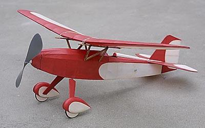
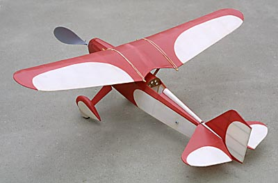
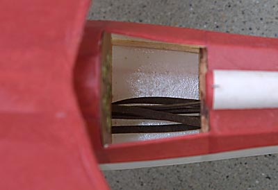
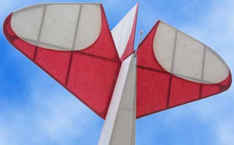

|
This is my version of the Jimmie Allen BA Parasol. Jimmie Allen was a mythical figure created for promoting Skelly Oil in 1933. This model is covered with Tissue on Mylar. I had been reading a lot about this technique on the Free Flight Mailing List and decided it was time to give it a try.
While this might seem to be a bit tedious, it worked out really well and wasn't as much work as I thought it might be. One twist in the process I included was to chalk the white tissue to preserve some opacity once it was doped. The last picture of the tail clearly shows that chalking was worth the effort. A real advantage of laying the tissue over a mylar base was being able to create a color schem with complete disregard for the structure of the model. It was refreshing to not be restricted to spar, rib and longeron locations when adding color trim. The white tissue was applied first followed by the red. The tissue was held down with a light coat of well thinned nonshrinking nitrate dope. |

 |
|  |
This image clearly shows the mylar on the inside of the bottom of the fuselage. It obviously seals the tissue from the inside. After a couple of years of flying, this model still does not have a single lube stain on the fuselage tissue.
True, the structure remains unprotected, but that can also be accomplished with a sprayed coat or two of dope before covering. Yeah, that is 6 strands of real Pirelli for power. |
|
I took a few extra moments to create this instrument panel for the model. The panel is cherry veneer with a few coats of varnish. Small sections of brass tubing were parted off with a Sherline lathe. The faces are hand drawn and clear coated with laminating film before installing behind the panel. As you can see the model still needs a windscreen.
Look carefully at the above photo and you can see that the struts are plugged in to the fuselage with wire. I glued 1/16" o.d. K&S aluminum tubing to two crosspieces of the fuselage. 1/32" music wire is imbedded in the struts. The fuselage can then be easily covered before opening the tubing ends & mounting the struts. | |
|

Here you can see that the chalked white tissue has virtually the same opacity as the red. White tissue normally becomes almost clear when doped. Actually it becomes sort of a sickly, milky gray.
White tissue on models has been a problem for years, and almost always dictated a few coats of white dope after covering. This of course can add significant weight. Chalking seems to be a better way to go. | |
|
| Wing Span - 28" Length - 20"
| Motor - 3 20" loops of Pirelli | |
Return to
Copyright 2001, Thayer Syme. All rights reserved